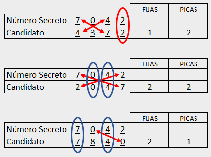

FIJAS Y PICAS
Ingresa números
Este es un juego en el que te enfrentarás a una Mente Maestra. ¿Podrás superarla?
La Mente Maestra pensará un número de 4 dígitos y tú tendrás que adivinarlo. Este número tiene la particularidad de que sus dígitos no se repiten entre sí.
Seguro lo entenderás mejor con algunos ejemplos.
Los números 5 6 4 0 – 7 8 9 1 – 3 2 6 4 – 0 1 8 3 son todos válidos , pues como verás, sus dígitos se encuentran una sola vez. Por otra parte, números como 5 6 6 3 – 0 1 0 9 – 2 7 2 7 – 8 3 9 3 no son válidos, por tanto, la Mente Maestra jamás pensará un número secreto con esta composición.
Ahora veamos cómo podrás adivinar el número secreto.
En el panel de ingreso de números, podrás escribir candidatos con las mismas reglas que usa la Mente Maestra para pensar su número. Recuerda, se trata de un número de 4 dígitos los cuales no se repiten entre sí. Una vez registres tu número candidato, se lo enviarás a la Mente Maestra y esta te devolverá el número con dos pistas. Te dirá la cantidad de fijas y la cantidad de picas que tiene tu número respecto al número secreto.
¿Qué son Fijas y qué son Picas?
Es importante que tengas claro qué significa cada una, pues solo de esta forma podrás descifrar el número secreto.
Fijas:
Una fija es cuando uno de los dígitos de tu número candidato, coincide con la misma posición del número secreto. Cuando lanzas tu número candidato puedes recibir cinco respuestas respecto a las fijas. A saber, cero, una, dos, tres fijas o la que constituye el objetivo del juego, cuatro fijas. “Cuatro fijas” quiere decir que has descifrado el número de la Mente Maestra. Veamos algunos ejemplos en la siguiente imagen:
El número secreto es 7042; si lanzas el número candidato 8149, la pista de respuesta
será
“Una
fija”
pues solo uno de los dígitos coincide con los dígitos del número secreto y además se
encuentra
en la
misma posición. Si miras bien en el número candidato, el tercer dígito es 4 el cual
también
se
encuentra en la tercera posición del número secreto.
En el segundo caso, el candidato
7932,
tiene en
la primera posición el 7 y en la última posición, el 2, números que también coinciden en
la
misma
posición del número secreto, por tanto, la pista será “dos fijas”.
En un tercer ejemplo,
vemos
cómo
el candidato tiene la pista “tres fijas” pues verás que contiene el 7, el 0 y el 2 todos
en
las
mismas posiciones que el número secreto.
Picas:
Una pica es cuando uno de los dígitos de tu número candidato se encuentra en el número de la Mente Maestra, pero en una posición diferente. De la misma forma que ocurre con las fijas, existen cinco casos diferentes. Tu número candidato puede recibir como pista, cero, una, dos, tres y hasta cuatro picas. Veamos algunos ejemplos en la siguiente imagen para entender mejor el concepto de Picas:
En el primer caso, tenemos el dígito 4 que también se encuentra en el número secreto,
pero
no en
la
misma posición. Esto devuelve la pista “una pica”.
En el segundo candidato tenemos dos
dígitos
que
también se encuentran en el número secreto: el 7 y el 2, por tanto, la pista que nos
dará la
Mente
Maestra será “dos picas”.
Y finalmente, nuestro tercer número candidato ha logrado
atinarles
a 3
dígitos del número secreto, pero como se encuentran en diferentes posiciones, la
respuesta
será
“tres picas”.
Bueno, seguro te estarás preguntando si tu candidato puede tener fijas y picas al tiempo. Si es así, seguro podrás ganarle fácilmente a la Mente Maestra. La respuesta a esa pregunta es un rotundo sí. Claro, la pista de respuesta a tu número candidato puede ser cualquier combinación entre fijas y picas. Por supuesto, podrías recibir una pista como “cero picas y cero fijas”, o “Una fija y 3 picas” y así sucesivamente. Como siempre, se entiende mejor con unos ejemplos, pero esta vez dejaré que tú los interpretes. Seguro lo sabrás hacer y así ya estarás listo para vencer a la Mente Maestra.
Estrategia:
Puedes emplear cualquier estrategia que se te ocurra para descifrar el número de la Mente Maestra, pero para ayudarte a sentar una base lógica, voy a darte la más importante de las claves para lograr el objetivo: “Nunca crees números candidatos cuyos dígitos se repitan en la misma posición siempre”. En otras palabras, aprovecha cada candidato para definir la posición de cada dígito.